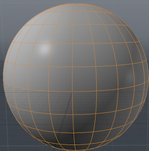

Item mandelbrot¶
Item_mandelbrot is a basic example plugin. This wiki page is intended as a walkthrough of the code in order to help you better understand the SDK.
This plugin adds the mandelbrot pattern to modo. A mandelbrot is a shading pattern that you overlay onto whatever you wish.
You can access the pattern by going to the model tab->Shading->Add Layer->mandelbrot.
A unit sphere before the mandelbrot pattern is applied
![pages\tutorials\./../../images/Brat1.png]][[File:Brat2.png](images/Brat1.png%5d%5d%5b%5bFile_Brat2.html)
The two sides of the above unit sphere after the mandelbrot pattern is applied
Class Declarations¶
This plugin uses a sort of nested code structure wherein we create classes that we later use in other classes which we then again use in our final package class.
This class forms the base of the structure.
We want this class to create a filter with which to apply our mandelbrot pattern. First, we inherit from Filter_(lx-filter.hpp)#.284.29_SDK:_ILxStackFilter_interface to be able to compare, query, and convert our filter. We then inherit from CLxImpl_ImageFilter to be able to actually build an image filter, as the mandelbrot pattern is ultimately an image. Finally, we inherit from CLxImpl_ImageFilterMetrics so we can can keep track of the values in the filter.
class CMandelbrotFilter :
public CLxImpl_StackFilter,
public CLxImpl_ImageFilter,
public CLxImpl_ImageFilterMetrics
{
public:
CMandelbrotPackage *src_pkg;
CLxUser_GradientFilter g_filt[4];
unsigned i_w, i_h, i_max;
double x_0, x_s, y_0, y_s;
float s_col[4];
CLxUser_ImageWrite w_img;
float *f_buf;
double max_log;
bool use_image, gen_buffer;
const char * filt_Type (void) LXx_OVERRIDE;
unsigned filt_Compare (ILxUnknownID other) LXx_OVERRIDE;
LxResult filt_Convert (ILxUnknownID other) LXx_OVERRIDE;
unsigned imf_Type (void) LXx_OVERRIDE;
LxResult imf_Generate (int width, int height, ILxUnknownID monitor, void **ppvObj) LXx_OVERRIDE;
LxResult imfmet_Generate (LXtImageMetrics *metrics) LXx_OVERRIDE;
private:
LxResult GenerateFullFilter (void);
LxResult GenerateSmallFilter (const int w, const int h, CLxUser_ImageWrite &wimg);
void GenerateFBuffer (const int w, const int h, float *fbuf);
void ConvertFBufferToImage (const float *fbuf, const int w, const int h, CLxUser_ImageWrite &wimg);
};
We want to be able to create threads and then share our work among them, so we inherit from Thread_(lx-thread.hpp)#.2822.29_SDK:_ILxSharedWork_interface.
Continuing along with the theme of nested code, we create an object of the type CMandelBrotFilter, the class we just wrote. Following this, we have three classes with the share prefix, indicating that they are redeclarations of virtual functions from the CLxImplSharedWork class. The Spawn class starts everything off, creating a work object that holds the total number of lines in the image that we want our filter to work on. Next, our Evaluate function takes one line of the image and uses the filter on it. The Share function brings these two together, having the work object tell many threads to use the Evaluate method at once.
class CMandlebrotWork :
public CLxImpl_SharedWork
{
public:
CMandelbrotFilter *src_filt;
float *fbuf;
int i_y, n_y, w, h;
LxResult share_Evaluate ();
LxResult share_Spawn (void **ppvObj);
LxResult share_Share (ILxUnknownID other, unsigned int split);
float Pixel (double x, double y);
};
We want to implement our package by creating an instance of it, so we inherit from the Package_(lx-package.hpp)#.2825.29_SDK:_ILxPackageInstance_interface, as the superclass of all image related clips, includes so we inherit from it.
We create a CLxUser_Item object called m_item. The functions with the pins prefix are redeclarations of virtual functions in the CLxPackageInstance class. The Initialize function sets the m_item object as an instance, and the Cleanup function clears it, removing it as an instance.
The functions with the vclip prefix are redeclarations of virtual functions declared in the ClxVideoClipItem class. The Prepfilter function sets the channels we need to allocate our filter and records the indices we use for those channels in a cache. The AllocFilter function creates a filter using the channel data from the channels we set in PrepFilter. Cleanup releases the cache we used to set the values of the channels that we used.
class CMandelbrotInstance :
public CLxImpl_PackageInstance,
public CLxImpl_VideoClipItem
{
public:
CMandelbrotPackage *src_pkg;
CLxUser_Item m_item;
LxResult pins_Initialize (ILxUnknownID item, ILxUnknownID super) LXx_OVERRIDE;
void pins_Cleanup (void) LXx_OVERRIDE;
LxResult vclip_PrepFilter (ILxUnknownID eval, void **cache) LXx_OVERRIDE;
LxResult vclip_AllocFilter (ILxUnknownID attr, void *cache, void **ppvObj) LXx_OVERRIDE;
void vclip_Cleanup (void *cache) LXx_OVERRIDE;
typedef struct st_GenData {
unsigned w, h, cx, cy;
unsigned rad, grd, col;
unsigned itr;
} GenData;
};
We want to construct a package for the mandelbrot filter, so we inherit from Package_(lx-package.hpp).
Three functions have the pkg prefix, indicating that they are redeclarations of virtual functions in the CLxImplPackage class. The SetupChannels function and the TestInterface function adds channels and attaches an interface to our package. Meanwhile, the Attach function, continuing on with the theme of nested code, creates a CMandekBrotInstance item and attaches it to the package that we are creating.
class CMandelbrotPackage :
public CLxImpl_Package
{
public:
CLxUser_ImageService img_svc;
static LXtTagInfoDesc descInfo[];
LxResult pkg_SetupChannels (ILxUnknownID addChan) LXx_OVERRIDE;
LxResult pkg_TestInterface (const LXtGUID *guid) LXx_OVERRIDE;
LxResult pkg_Attach (void **ppvObj) LXx_OVERRIDE;
};
This class creates a Factory_Object for all the object, which takes the objects that we specify and exports them, even is they are not servers. Only CMandelBrotPackage is exported as a server in this fle. Since the polymorph object has to exist for the lifetime of any instance, the are explicitly allocated as part of the global module and freed at shutdown.
class CFactories {
public:
CLxPolymorph<CMandelbrotInstance> inst;
CLxPolymorph<CMandelbrotFilter> filt;
CLxPolymorph<CMandlebrotWork> work;
CFactories ()
{
inst.AddInterface (new CLxIfc_PackageInstance <CMandelbrotInstance>);
inst.AddInterface (new CLxIfc_VideoClipItem <CMandelbrotInstance>);
filt.AddInterface (new CLxIfc_StackFilter <CMandelbrotFilter>);
filt.AddInterface (new CLxIfc_ImageFilter <CMandelbrotFilter>);
filt.AddInterface (new CLxIfc_ImageFilterMetrics<CMandelbrotFilter>);
work.AddInterface (new CLxIfc_SharedWork <CMandlebrotWork>);
}
} *pF;
./Server_Tags¶
Servers tags are examined when the server is initialized, and give information about the server. We set the tags in this case by taking descinfo[] arrays and associating the relevant data with the corresponding flags.
The tags here indicate that our Mandelbrot item type is a subtype of video clip meaning an image that may change over time.
LXtTagInfoDesc CMandelbrotPackage::descInfo[] = {
{ LXsPKG_SUPERTYPE, LXsITYPE_VIDEOCLIP },
{ 0 }
};
./Initialize_(index)¶
Intialize is called when we add the plugin to modo, and is the utility that exports the server.
This function exports a server with the package and staticdesc interfaces that is dependent on the CMandelbrotPackage. It also creates the factories using the function references in 138-164.
void
initialize ()
{
CLxGenericPolymorph *srv;
srv = new CLxPolymorph<CMandelbrotPackage>;
srv->AddInterface (new CLxIfc_Package <CMandelbrotPackage>);
srv->AddInterface (new CLxIfc_StaticDesc<CMandelbrotPackage>);
thisModule.AddServer ("mandelbrot", srv);
pF = new CFactories;
}
Helper Function¶
This function destroys the factories so they can persist while their objects are in use.
void
cleanup ()
{
delete pF;
}
Implementations¶
Here the channels for the package are created and their default values set using the Package_(lx-package.hpp)#.2815.29_SDK:_ILxAddChannel_interface utility
#define Cs_ITERATIONS "iterations"
#define Cs_SIZE "size"
#define Cs_CENTER "center"
#define Cs_RADIUS "radius"
#define Cs_COLOR "color"
#define Cs_SETCOL "setColor"
LxResult
CMandelbrotPackage::pkg_SetupChannels (
ILxUnknownID addChan)
{
...
}
This section uses Wrap_(lx-wrap.hpp)#CLxGenericPolymorph so that nexus knows what interfaces instances of this package support. This is necessary as to prevent query loops.
LxResult
CMandelbrotPackage::pkg_TestInterface (
const LXtGUID *guid)
{
...
}
Here, Attach is called to create a new instance of this item. The returned object implements a specific item of this type in the scene using the Wrap_(lx-wrap.hpp)#CLxPolymorph method.
LxResult
CMandelbrotPackage::pkg_Attach (
void **ppvObj)
{
...
}
The instance is the implementation of the item, and this set of code allocates one for each item in the scene. The instant can respond to a set of events.
LxResult
CMandelbrotInstance::pins_Initialize (
ILxUnknownID item,
ILxUnknownID super)
{
...
}
The VideoClipItem interface allows this item to function as a generic video clip. PrepFilter allows the item to select channels needed for filter allocation, and record the indices for those in a cache.
LxResult
CMandelbrotInstance::vclip_PrepFilter (
ILxUnknownID evalObj,
void **cache)
{
...
}
AllocFilter creates the image filter for a given frame.
LxResult
CMandelbrotInstance::vclip_AllocFilter (
ILxUnknownID attrObj,
void *cache,
void **ppvObj)
{
...
}
This section cleans up some data.
void
CMandelbrotInstance::vclip_Cleanup (
void *cache)
{
...
}
This section places the image onto the image stack where it generates target image on the fly
1 2 3 4 5 6 7 8 9 10 11 | const char *
CMandelbrotFilter::filt_Type (void)
{
...
}
unsigned
CMandelbrotFilter::imf_Type (void)
{
...
}
|
This uses Compare to compare a filter which has been evaluated to a new one being computed. If the size has changed we require the image to be remade from scratch. For other changes the past result is compatible with the current result so some previous work can be reused.
unsigned
CMandelbrotFilter::filt_Compare (
ILxUnknownID other)
{
...
}
This section will be called to convert a past evaluation to a compatible filter. We always use the existing image, and if only the color parameters have changed we can reuse the previous gradient input map.
LxResult
CMandelbrotFilter::filt_Convert (
ILxUnknownID other)
{
...
}
Here, generators allocate an image and fill it in. This filter maintains a reference to the image so it can be reused as needed. Filters that generate and forget would instead simply return the image.
LxResult
CMandelbrotFilter::imf_Generate (
int width,
int height,
ILxUnknownID monitor,
void **ppvObj)
{
...
}
Generate full filter(the main function in this section) will create the image filter at its full size, using the width and height from the channels on the Mandelbrot item.
LxResult
CMandelbrotFilter::GenerateFullFilter (void)
{
...
}
Generate small filter does the same as above, except it works on a smaller resolution, using a temporary float buffer. GenerateFBuffer() converts the buffer to the image
LxResult
CMandelbrotFilter::GenerateSmallFilter (
const int w,
const int h,
CLxUser_ImageWrite &wimg)
{
...
}
We generate the buffer in the threads. We allocate a work object using Alloc(F), initialize it to the image and process it.
void
CMandelbrotFilter::GenerateFBuffer (
const int w,
const int h,
float *fbuf)
{
...
}
This section converts the raw buffered values to colors. This could be done in the workers too, since setting pixels should be thread-safe.
void
CMandelbrotFilter::ConvertFBufferToImage (
const float *fbuf,
const int w,
const int h,
CLxUser_ImageWrite &wimg)
{
...
}
Adds a metrics interface for getting size and type info.
LxResult
CMandelbrotFilter::imfmet_Generate (
LXtImageMetrics *metrics)
{
...
}
The class created here(CMandelbrotWork) is a way to spread the work among threads. Each work object holds a current line and number of lines remaining initialized to zero. The master work object will be initialized to the total lines in the image, and the threading system will allocate enough new work objects to keep the system’s core busy.
LxResult
CMandlebrotWork::share_Spawn (
void **ppvObj)
{
...
}
Work objects that have work will be asked to share with those that don’t. In this case we transfer one line from this work object to the other. This is currently the only valid split mode, although it could transfer more lines to reduce contention.
LxResult
CMandlebrotWork::share_Share (
ILxUnknownID other,
unsigned int split)
{
...
}
Evaluate(the main function here) processes one piece of work, in this case a line of the image. The floating point buffer is filled with values from -1 to 1.
LxResult
CMandlebrotWork::share_Evaluate ()
{
...
}
Here, we compute a single pixel. This is the standard Mandelbrot loop, except that the final iteration count is scaled 0 to 1 in a log scale. Points in the set are assigned -1.
float
CMandlebrotWork::Pixel (
double x,
double y)
{
...
}